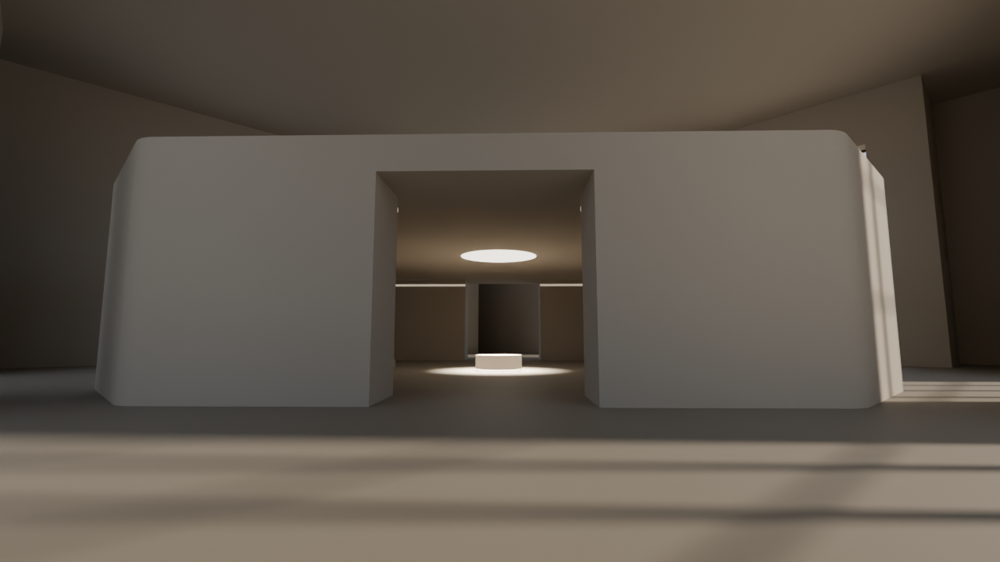
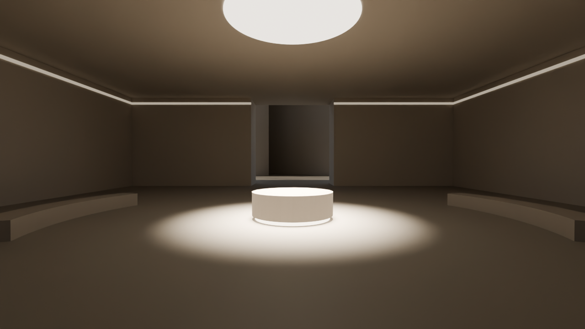
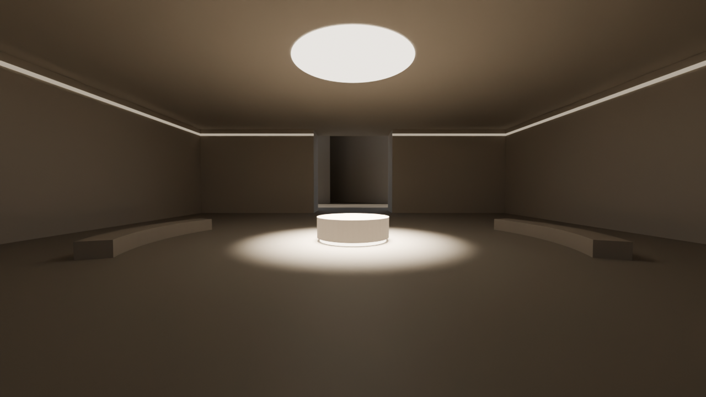
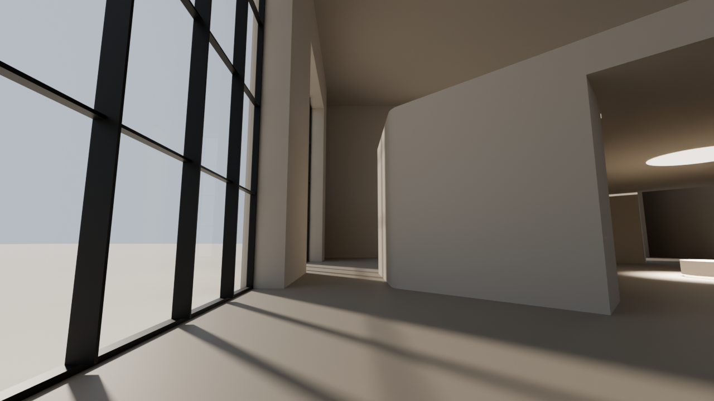
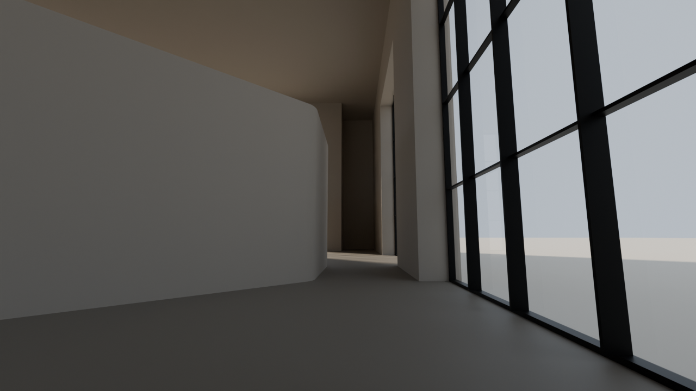
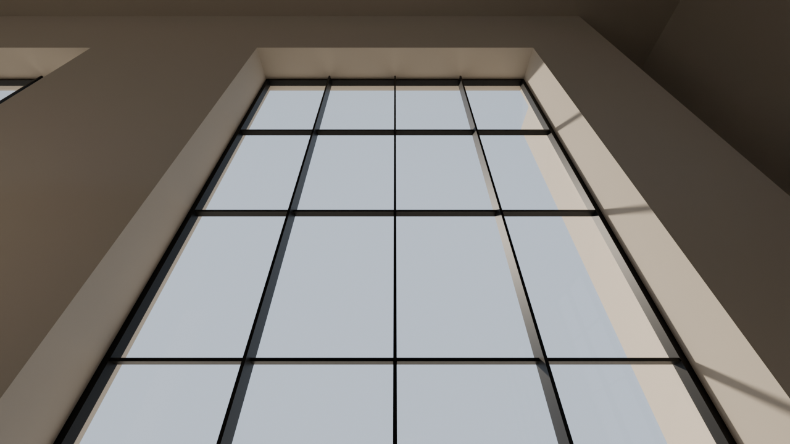
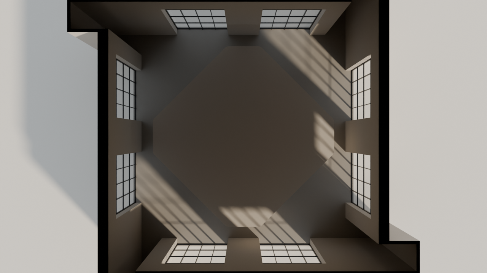
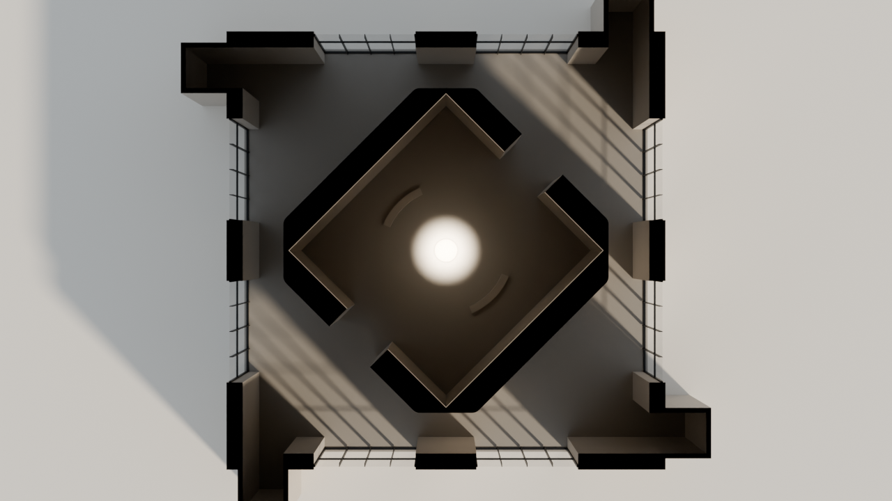

Pavillon — plan coté (d'après ton SVG)
Relevé sur « Fichier 2.svg » (1 m = 10 px), 05/11/2026. Cotes en mètres. Nom provisoire : « pavillon ».
Ce que j'ai lu
- Même carré de 40 × 40 m, mêmes portes de 4 m dans les angles (en moulinet) et mêmes couloirs de 14 × 4 m : on entre au sud, on sort au nord, impasses à l'ouest et à l'est.
- Grande salle à 17,5 m sous plafond, comme celle du Seuil. Plus de puits de lumière, plus de colonnes.
- Murs extérieurs dessinés épais de 1,6 m (0,4 m dans les autres salles) : j'en fais de profondes embrasures pour les baies ; le carré intérieur reste de 40 m.
- 8 baies vitrées de 10 m, deux par mur, symétriques : 7 m depuis l'angle, un trumeau de 6 m au milieu du mur, 3 m jusqu'à la porte.
- Au centre, un espace couvert : un carré posé sur la pointe (côté intérieur 21,9 m), murs de 2,45 m, pointes coupées à 16 m du centre (emprise 32 × 32 m), angles extérieurs arrondis. Il reste 4 m entre ses pointes et les murs.
- Deux ouvertures de 5,66 m, au milieu des faces nord-est et sud-ouest, face à face : dans l'axe qui va de l'entrée (sud) à la sortie (nord).
- Deux bancs en arc de 45°, de 6,5 à 7,2 m du centre (les mêmes que dans la rotonde), au sud-est et au nord-ouest.
- Au centre, le socle de Huntington (Ø 2,4 m, 0,8 m, gorge lumineuse), sans la statue. Le disque « œuvre » de 8 m du SVG est lu comme un repère.
Ce que je propose
- Plafond de l'espace central à 6 m, dalle de toit de 1 m (dessus à 7 m) ; les ouvertures montent jusqu'au plafond.
- Baies du sol à 14 m (3,5 m de mur au-dessus), vitrage à 0,3 m de la face extérieure : 1,3 m d'embrasure côté salle, qui découpe nettement les taches de soleil.
- Huisseries en acier noir, façon grandes façades modernes : cadre de 12 cm scellé dans l'embrasure, meneaux tous les 2,5 m (6 cm vus, 35 cm de profondeur, comme des raidisseurs), traverses tous les 3,5 m (6 × 15 cm), seuil métallique au sol : 16 carreaux de 2,5 × 3,5 m par baie.
- Soleil bas venant du sud-est (≈ 30° de hauteur) : il entre par les baies sud et est, dessine au sol le quadrillage des huisseries et frappe la face sud-est, pleine, de l'espace central ; il passe parallèlement aux deux ouvertures, donc n'entre pas dans l'espace central.
- Éclairage artificiel de l'espace central : la gorge du socle, une lumière ronde au plafond au-dessus du socle (Ø 4 m), et une gorge lumineuse discrète en haut des murs. Pénombre autour, comme partout.
- Les quatre fentes zénithales de la salle du Seuil sont retirées aussi : la lumière ne vient que des baies.
Décisions de Ludovic (05/11)
- Dehors : très lumineux et simple (sol clair, ciel) ; il ne se voit guère que pendant le passage vers une autre salle.
- Couloirs : ceux de toutes les salles (parois de 0,5 m) ; murs de la salle de 1,6 m.
- Vue d'arrivée : dans l'espace central, à 8,5 m de l'œuvre, depuis l'ouverture sud-ouest.
- Œuvre : « Souffle d'éclats » (le socle seul, en attendant l'œuvre en 3D).
Aperçu 3D
Rendu direct dans Blender (blender/apercu-pavillon.py), sans précalcul de lumière : les volumes sont justes, la lumière est indicative. Pas de couloirs (amorces fermées), dehors simplifié (sol clair et ciel).








Plan
Nord en haut. En gris clair : l'emprise couverte de l'espace central. En vert : le parcours proposé de la porte d'entrée à la vue d'arrivée, puis vers la sortie.
Coupe A–A
Est-ouest par le centre, vue vers le nord : l'espace central coupé à ses pointes (0,5 m de mur) ; au-delà, les faces intérieures, l'ouverture nord-est, et au-dessus de la dalle, les deux baies du mur nord. En jaune : la lumière proposée au-dessus du socle.
Une baie vue de l'intérieur
10 × 14 m, meneaux tous les 2,5 m, traverses tous les 3,5 m. À droite, la coupe d'un meneau, dix fois plus grande.